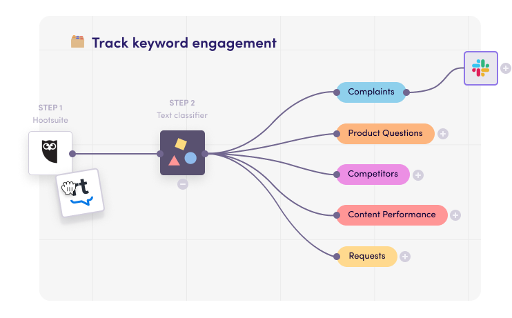
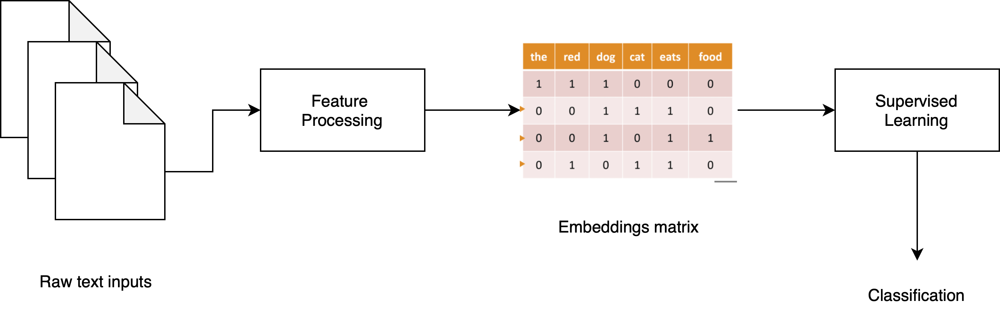
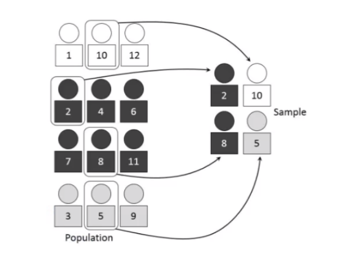
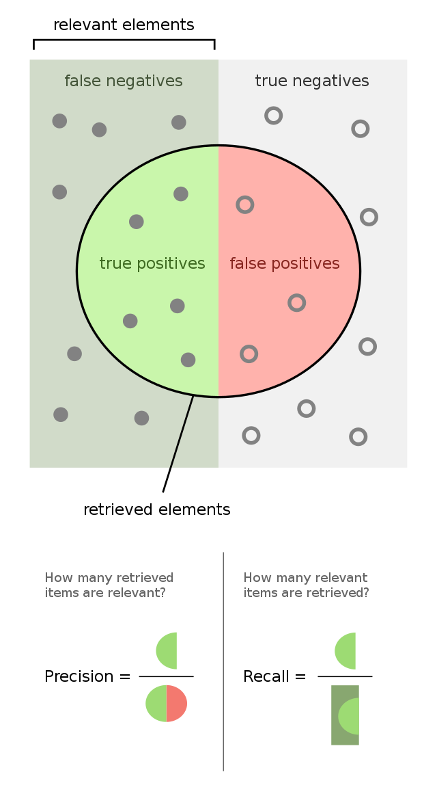
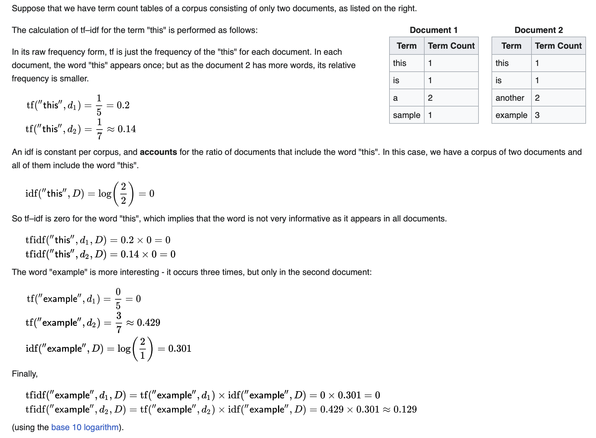

Session 6: More on working with text data in scikit-learn#
In the previous session, we used UMAP to visualize text data. In this lesson, we will learn how to use scikit-learn to prepare text data for machine learning, and then apply any ML model to solve a text classification task.
Applications of text classification#
Many business problems can be framed as text classification problems, specially those involving customer or user feedback. The commond ground is that for all these applications, the input is just raw text (in a language such as English), so it can be challenging to apply machine learning to solve these problems.
Here are two examples.
Sentiment Analysis 😍/😡#
Sentiment Analysis, also known as opinion mining, is a subfield of Natural Language Processing (NLP) that involves the use of machine learning, statistics, and natural language understanding to identify, extract and study affective states and subjective information from source materials. Typically, it is a supervised task.
It’s usually applied to text data to help businesses monitor brand and product sentiment in customer feedback, and understand customer needs.
Sentiment analysis can be broadly categorized into document level, sentence level, and aspect level analysis. It can detect subjective information such as opinions, beliefs, evaluations, appraisals, and emotions.
The challenges faced in sentiment analysis include understanding the context, detecting sarcasm, and handling ambiguous sentences that could have multiple meanings.

Topic Classification 🔀#
Topic classification is the task of assigning a predefined category to an unlabeled text document.
It is a supervised machine learning task where the training data is composed of documents that are already labeled with one or more categories.
Topic classification is used in a variety of applications such as spam filtering, email routing, and content-based recommendation.
The challenges faced in topic classification include handling noisy data, and dealing with the large number of categories that are often present in real-world applications, which leads to imbalanced datasets.

Working with text data in ML#

Feature processing#
Feature processing is the process of transforming text into a more digestible form so that it can be easily consumed by machine learning algorithms. There are usually two phases in text processing: tokenization and vectorization.
Tokenization: the process of splitting a text into smaller units called tokens. It is the first step in text processing. The tokens could be words, sentences, or even characters. The tokens are then used as the basic building blocks for any NLP task.
Vectorization: the process of converting text into numerical representations called vectors. It is the second step in text processing. The vectors are then used as input to machine learning algorithms.
In scikit-learn, the CountVectorizer and TfidfVectorizer classes are used for both tokenization and vectorization.
CountVectorizer: converts a collection of text documents to a matrix of token counts, following the bag-of-words approach.
TfidfVectorizer: converts a collection of raw documents to a matrix of TF-IDF features (more on this later).
Example task: complaint classification 🤬#
In this lesson, we will use a subset of the Consumer Complaint Database from the Consumer Financial Protection Bureau (CFPB) to build a text classification model that can automatically classify consumer complaints into several categories.
With a good model, the application can automatically classify complaints into categories, and route them to the appropriate department for further processing.
import pandas as pd
df = pd.read_csv('complaints.csv')
# pandas show full text
pd.set_option('display.max_colwidth', -1)
df.sample(5)
/var/folders/l_/k13w4mhd5hv4bddxwqz8qdfw0000gn/T/ipykernel_2859/3223482129.py:2: FutureWarning: Passing a negative integer is deprecated in version 1.0 and will not be supported in future version. Instead, use None to not limit the column width.
pd.set_option('display.max_colwidth', -1)
| Product | Consumer_complaint_narrative | category_id | |
|---|---|---|---|
| 3563 | Credit card | # 1 ... Between XX/XX/XXXX and XX/XX/XXXX, your credit limit/high balance was {$320.00} { XXXX-ISSUES } ... ... ( # 2 ... 30 days past due as of XX/XX/XXXX ) ... .on my Capital One Credit Card. \n\n# 1. Concerning the above statement : I lived in XXXX, ( where the MAIL Service is NOT SO GOOD ... often NOT AT ALL )! Did ''NOT '' or never did get ANY STATEMENT or NEW CR EDIT CARD, from Capital One, ( after XXXX , sold my Account to Capital One Credit Cards ). I lived in XXXX., from, XX/XX/XXXX, until XX/XX/XXXX. I DID NOT GET ANY STATEMENTS FROM ''CAPITAL ONE ''. DESPITE ''NOT '' receiving any Statement, ( THUS NOT KNOWING WHAT I OWED OR EVEN THE PAYMENTS OWED ), I CONTINUED TO MAKE EVERY EFFORT, TO PAY, EACH MONTH, MY MONTHLY PAYMENTS. ( Paid at least {$15.00}, to $ XXXX-Dollars per Month, during the period from XX/XX/XXXX, until XX/XX/XXXX. \nI was Hospitalized XX/XX/XXXX ... ... ( had a Hospital Bill of almost $ 4,000-Thousnad Dollars ). This is the reason I was LATE with the XX/XX/XXXX PAYMENT for my Capital One Credit Card. Because I was in the Hospital, ( XXXX ). Stayed in the Hospital for 6-Days, at XXXX XXXX, XXXX, XXXX. \nDue to my Hospital stay, ( actually I had forgotten about making my Capital One Credit Card payment ). I thought I had already scheduled this to go out. I was wrong! But once I realized this ... ... XX/XX/XXXX, I MADE NOT ONE BUT 2-PAYMENTS FOR XX/XX/XXXX. \nDespite this ... ... THE COMPANY ( CAPITAL ONE ), PUT ON MY CREDIT REPORT, THAT I HAD BEEN LATE ... .. ( which was TRUE ). But there was a REASON ... .. ( ''NOT '' an Excuse )! \nI called CAPITAL ONE, asking them to REMOVE my LATE PAYMENT ... ( as this was the only time I had EVER BEEN LATE, with ANY PAYMENTS, to them. \n***CAPITAL ONE, told me that they were going to HAVE THIS REMOVED*** ( THE LATE PAYMENT, XX/XX/XXXX ... ... TO DATE THIS HAS ''NOT '' BEEN DONE AS OF YET? \nHopefully, Capital One, with get this request accomplished. As all XXXX-Credit Agencies are reporting my Capital One Credit Card ( as being late over 30-Days, in XX/XX/XXXX ). \n\n# XXXX ... .Please REQUEST that CAPITAL ONE, & ALL XXXX AGENCIES .... ( TAKE OFF MY LATE PAYMENT OF XXXX, XX/XX/XXXX ). Due to my Hospitalization, at XXXX XXXX, in XXXX, XXXX, ( for 6-Day 's XX/XX/XXXX ), PLUS ''NOT '' RECEIVINGANY STATEMENTS whatsoever, when I lived in XX/XX/XXXX , from XX/XX/XXXX, until my return in XX/XX/XXXX. \nThank you for your help concerning me trying to get my Credit in order. \nRespectfully, XXXX | 2 |
| 2885 | Debt collection | On XX/XX/XXXX at XXXX EST I received a threatening phone call from someone who claimed they were with a " local courier '' by the name of XXXX XXXX. He left a voicemail stating that I better be available between XXXX tomorrow and that he would be going to my place of employment first and if I was not there would be speaking with my supervisor to find out when my next shift would be. He also indicated that he would then proceed to go to the homes of family and friends to locate me. He stated that I would need two forms of ID and a witness to sign for these documents. At the end of the voicemail he provided me with a phone number for XXXX XXXX XXXX XXXX ( XXXX XXXX XXXX XXXX ) and a " case number ''. Upon calling XXXX XXXX XXXX with this information I spoke with XXXX who informed me that they were a mediation firm working on behalf of Fifth Third Bank. He stated that Fifth Third had found me to have committed fraud for my own personal gain and that they were moving forward with court proceedings at which time I would owe {$810.00}. I explained to him that I currently have an account with Fifth Third Bank and was curious as to why they had not contacted me about this old bank account. He stated that they contracted with them for mediation on it and that it had been in default with them since XX/XX/XXXX. I asked him what the amount would be if I paid today. He placed me on hold for 10 minutes and then came back to the phone and stated I could make a payment arrangement for 3 payments of {$180.00} or I could settle for a one time payment of {$270.00}. I advised him that I would settle but that I needed confirmation that the date was settled and advised him that he needed to contact this " private courier '' company to notify them because I did not want them showing up at my job, my house, or the home of my friends and/or family. He agreed to email me this notification which I have attached to this complaint. As soon as I got off the phone I contacted Fifth Third Bank to let them know about my experience. The representative that I spoke with stated that they wouldn't have any information about the account since they sold it to a debt collector. I told her I was very upset and ready to cancel my current accounts with them because of this to which she replied " Well that doesn't have anything to do with Fifth Third. '' I told her of course it does, you sold the debt to this company and they contacted me with threats. I called the FTC to file a complaint about this private courier for XXXX XXXX XXXX and gave them the phone number I received the call from, however when you call the number it states to email any inquiries to them at their website and conveniently does not give you a website. I called XXXX back at XXXX XXXX XXXX and attempted several times to get the information for this " private courier '' but he refused stating that they did not have this information. I explained that I intended to make a complaint with the FTC about this company and I needed their contact information. He continued to refuse and stated that they don't work directly with them but that he could report it back to the attorney. I then asked for the attorney 's contact information so that I could get the information myself, he refused to provide me with that as well. I informed him that since he was not willing to provide me with this information that I would be filing a complaint with consumerfinance.gov and his response was " Well if that's what you feel you have to do. '' | 0 |
| 3655 | Student loan | I enrolled in XXXX for XXXX term in 2010. I was told by the financial aid counselor at the time that I could use federal student aid to cover the cost of class. After classes began there was a delay in processing my student aid and so my student account was placed in negative status. After continued contact between myself and my counselor I was able to correct the issue and the money was dispersed to the University. It was at this time I was told they would not be able to use federal funds, and that I would have to cover the costs out of pocket. This after the term was actually over and I received a final grade for the course. After informing them I would be unable to as I was unemployed at the time, which was the reason for using federal aid in the first place, I was told that if I did not the account would be placed in collections and reflected in my credit report. This has been the case ever since. | 1 |
| 3050 | Debt collection | In XXXX, I've disputed a medical charge on my credit report for Simon 's agency. The company insisted that I was informed by them AND by XXXX XXXX XXXX about unpaid debt. They have items listed in the following amounts from 2015 : {$10.00}, {$2.00}, {$15.00}, {$.00}. I advised the company that I have NEVER received a letter from them OR XXXX XXXX XXXX regarding these amounts and requested they send me proof from XXXX XXXX XXXX confirming these amounts. My representative - XXXX ext XXXX - advised it will take too long to send the proof that this was my bill. \n\nTill this day, they have NOT sent me the actually bill from XXXX XXXX XXXX regarding these amounts that are now in collections. PLEASE HELP with getting these documents so I may clear my name. \n\nCompany number : XXXX | 0 |
| 410 | Credit reporting | XXXX Bank XXXX XXXX XXXX offered me a XXXX credit card after financing a vehicle on XXXX of XXXX. I was told by XXXX Bank XXXX XXXX XXXX customer service that since I had been approved for the loan a hard inquiry would not be run on my credit when applying for the XXXX credit card. A hard inquiry was placed on my credit on XXXX XXXX XXXX. I have contacted XXXX Bank XXXX XXXX XXXX multiple times about the removal of the hard inquiry. I was promised it would be removed. Today I was finally told it would not be removed. | 5 |
Let’s have a look at the classes distribution
import matplotlib.pyplot as plt
fig = plt.figure(figsize=(8,6))
df.Product.value_counts().plot.bar(ylim=0)
plt.show()
Seems that the dataset is imbalanced, which is a common problem in text classification tasks.
As usual, the next step is to split the data into training and test sets. Notice here we just have one column for the X, and another for the classes.
⚠️ Since the data is imbalanced, when doing the splitting it is best to use the stratify option, so that the classes distribution is preserved in the training and test sets:

from sklearn.feature_extraction.text import TfidfVectorizer
from sklearn.model_selection import train_test_split
X = df.Consumer_complaint_narrative
y = df.Product
X_train, X_test, y_train, y_test = train_test_split(X, y, random_state = 0, test_size=0.5, stratify=y)
We only have the raw texts as the only feature, let’s do some feature processing.
We will use first sklearn’s CountVectorizer class to do this for us along with a couple other preprocessing steps:
Split the text into tokens (i.e. words) by splitting on whitespace.
Remove english stopwords (the, and, etc), to remove noise from the data.
Remove all infrequent words (which occur less than 5 times) in the entire corpus (via the min_df parameter).
Reference: https://scikit-learn.org/stable/modules/feature_extraction.html#text-feature-extraction
One the CountVectorizer has applied the previous set of steps, then it just counts the number of times each word appears in each document, and returns a matrix of counts. This is what is call a bag-of-words representation. This resulting matrix is also called an embeding matrix

from sklearn.feature_extraction.text import CountVectorizer
feature_processor = CountVectorizer(stop_words='english', min_df=5)
embed_train = feature_processor.fit_transform(X_train)
embed_test = feature_processor.transform(X_test)
Let’s check the dimensions of the embedding matrix:
embed_train.shape
(1989, 2992)
We have 1989 documents (rows) in the training set.
After the tokenization, we only have 2992 unique words (columns) in the vocabulary.
After the feature processing, we have a numeric matrix, so we can apply any supervised ML model to solve the classification task.
from sklearn.ensemble import RandomForestClassifier
rfc = RandomForestClassifier(n_estimators=10, n_jobs=-1, random_state=0)
rfc.fit(embed_train, y_train)
RandomForestClassifier(n_estimators=10, n_jobs=-1, random_state=0)In a Jupyter environment, please rerun this cell to show the HTML representation or trust the notebook.
On GitHub, the HTML representation is unable to render, please try loading this page with nbviewer.org.
RandomForestClassifier(n_estimators=10, n_jobs=-1, random_state=0)
Since the data is imbalanced, instead of the accuracy, we just focus on the precision, recall and F1-score metrics.#

As we have more than two classes, we compute each metric for each class (against the others), and then compute the average across all classes.
This can be easily done using the classification_report function from sklearn.
# classification report
from sklearn.metrics import classification_report
y_pred = rfc.predict(embed_test)
print(classification_report(y_test, y_pred))
precision recall f1-score support
Bank account or service 0.69 0.39 0.49 96
Consumer Loan 0.40 0.03 0.06 65
Credit card 0.62 0.64 0.63 205
Credit reporting 0.59 0.48 0.53 219
Debt collection 0.72 0.88 0.79 766
Mortgage 0.80 0.86 0.83 469
Student loan 0.86 0.50 0.63 169
accuracy 0.72 1989
macro avg 0.67 0.54 0.57 1989
weighted avg 0.71 0.72 0.70 1989
We have an averaged F1-score of 0.70, which is not bad for a first model. Let’s see if we can improve it.
TF-IDF Vectorizer#
The TF-IDF vectorizer is another way to vectorize text data. It is similar to the CountVectorizer, but it also takes into account the frequency of each word in the entire corpus, and not just in each document.
Each position in the embedding matrix is computed with the following formula:
For a word \(i\) in document (sample) \(j\), the TF-IDF score is computed as follows:
where
\(tf_{i, j}\) is the number of times word \(i\) appears in document \(j\) (same as the CountVectorizer). Sometimes this is an average instead of a sum.
\(df_i\) is the number of documents that contain word \(i\).
\(N\) is the total number of documents.
The last term (the log of the inverse) adjusts for the fact that some words appear more frequently in general, so they should have less weight.
Example calculation#

In scikit-learn, the TfidfVectorizer class does all this for us.#
It also includes the tokenization and filering steps, similarly to CountVectorizer.
tfidf = TfidfVectorizer(min_df=5, stop_words='english')
embed_train = tfidf.fit_transform(X_train)
embed_test = tfidf.transform(X_test)
Notice that the vocabulary is the same:
(only the values of the matrix change, based on the previous formula)
embed_train.shape
(1989, 2992)
rfc = RandomForestClassifier(n_estimators=10, n_jobs=-1, random_state=0)
rfc.fit(embed_train, y_train)
y_pred = rfc.predict(embed_test)
print(classification_report(y_test, y_pred))
precision recall f1-score support
Bank account or service 0.73 0.45 0.55 96
Consumer Loan 0.33 0.03 0.06 65
Credit card 0.67 0.62 0.65 205
Credit reporting 0.68 0.43 0.53 219
Debt collection 0.71 0.90 0.79 766
Mortgage 0.80 0.89 0.84 469
Student loan 0.90 0.58 0.71 169
accuracy 0.74 1989
macro avg 0.69 0.56 0.59 1989
weighted avg 0.73 0.74 0.72 1989
Now the F1-score is 0.72, which is a slight improvement over the previous model!
When to choose CountVectorizer vs TfidfVectorizer?#
This is a common question, and the answer is: it depends on the dataset. You should try both and see which one works best for your dataset, as if it were an hyperparameter.
Writing less code: Pipelines#
In the previous examples, we had to write a lot of code to do the feature processing, and then apply the ML model.
In scikit-learn, we can use pipelines to simplify this process.
A pipeline is a sequence of steps that are executed in order, and the output of each step is used as the input to the next step.
from sklearn.pipeline import Pipeline
pipeline = Pipeline([
('vect', TfidfVectorizer(min_df=5, stop_words='english')),
('clf', RandomForestClassifier(n_estimators=10, n_jobs=-1, random_state=0))
])
pipeline
Pipeline(steps=[('vect', TfidfVectorizer(min_df=5, stop_words='english')),
('clf',
RandomForestClassifier(n_estimators=10, n_jobs=-1,
random_state=0))])In a Jupyter environment, please rerun this cell to show the HTML representation or trust the notebook. On GitHub, the HTML representation is unable to render, please try loading this page with nbviewer.org.
Pipeline(steps=[('vect', TfidfVectorizer(min_df=5, stop_words='english')),
('clf',
RandomForestClassifier(n_estimators=10, n_jobs=-1,
random_state=0))])TfidfVectorizer(min_df=5, stop_words='english')
RandomForestClassifier(n_estimators=10, n_jobs=-1, random_state=0)
Instead of several .fit, we can just call .fit on the pipeline, and it will do all the steps for us.
pipeline.fit(X_train, y_train)
y_pred = pipeline.predict(X_test)
print(classification_report(y_test, y_pred))
precision recall f1-score support
Bank account or service 0.73 0.45 0.55 96
Consumer Loan 0.33 0.03 0.06 65
Credit card 0.67 0.62 0.65 205
Credit reporting 0.68 0.43 0.53 219
Debt collection 0.71 0.90 0.79 766
Mortgage 0.80 0.89 0.84 469
Student loan 0.90 0.58 0.71 169
accuracy 0.74 1989
macro avg 0.69 0.56 0.59 1989
weighted avg 0.73 0.74 0.72 1989
We can make the pipeline as complex as we want, and it will still work ⚗️
For example, let’s add a dimensionality reduction step to the pipeline, using PCA or UMAP.
from sklearn.pipeline import Pipeline
from sklearn.decomposition import PCA
pipeline = Pipeline([
('vect', TfidfVectorizer(min_df=5, stop_words='english')),
('pca', PCA(n_components=30, svd_solver="arpack")),
('clf', RandomForestClassifier(n_estimators=10, n_jobs=-1, random_state=0))
])
pipeline.fit(X_train, y_train)
y_pred = pipeline.predict(X_test)
print(classification_report(y_test, y_pred))
precision recall f1-score support
Bank account or service 0.64 0.57 0.60 96
Consumer Loan 0.29 0.06 0.10 65
Credit card 0.62 0.61 0.62 205
Credit reporting 0.69 0.55 0.61 219
Debt collection 0.72 0.89 0.80 766
Mortgage 0.85 0.83 0.84 469
Student loan 0.87 0.55 0.67 169
accuracy 0.74 1989
macro avg 0.67 0.58 0.61 1989
weighted avg 0.73 0.74 0.73 1989
pipeline
Pipeline(steps=[('vect', TfidfVectorizer(min_df=5, stop_words='english')),
('pca', PCA(n_components=30, svd_solver='arpack')),
('clf',
RandomForestClassifier(n_estimators=10, n_jobs=-1,
random_state=0))])In a Jupyter environment, please rerun this cell to show the HTML representation or trust the notebook. On GitHub, the HTML representation is unable to render, please try loading this page with nbviewer.org.
Pipeline(steps=[('vect', TfidfVectorizer(min_df=5, stop_words='english')),
('pca', PCA(n_components=30, svd_solver='arpack')),
('clf',
RandomForestClassifier(n_estimators=10, n_jobs=-1,
random_state=0))])TfidfVectorizer(min_df=5, stop_words='english')
PCA(n_components=30, svd_solver='arpack')
RandomForestClassifier(n_estimators=10, n_jobs=-1, random_state=0)
Exercise: Sentiment Analysis on Movie Reviews 🎥#
from sklearn.datasets import load_files
movie_reviews_data_folder = 'data/movie_reviews'
dataset = load_files(movie_reviews_data_folder, shuffle=False)
We have around 2000 movie reviews, and we want to classify them as positive or negative.
len(dataset.data)
2000
dataset.target_names
['neg', 'pos']
X = dataset.data
y = dataset.target
Let’s have a look at some of the reviews:
print(X[2])
b"it is movies like these that make a jaded movie viewer thankful for the invention of the timex indiglo watch . \nbased on the late 1960's television show by the same name , the mod squad tells the tale of three reformed criminals under the employ of the police to go undercover . \nhowever , things go wrong as evidence gets stolen and they are immediately under suspicion . \nof course , the ads make it seem like so much more . \nquick cuts , cool music , claire dane's nice hair and cute outfits , car chases , stuff blowing up , and the like . \nsounds like a cool movie , does it not ? \nafter the first fifteen minutes , it quickly becomes apparent that it is not . \nthe mod squad is certainly a slick looking production , complete with nice hair and costumes , but that simply isn't enough . \nthe film is best described as a cross between an hour-long cop show and a music video , both stretched out into the span of an hour and a half . \nand with it comes every single clich ? . \nit doesn't really matter that the film is based on a television show , as most of the plot elements have been recycled from everything we've already seen . \nthe characters and acting is nothing spectacular , sometimes even bordering on wooden . \nclaire danes and omar epps deliver their lines as if they are bored , which really transfers onto the audience . \nthe only one to escape relatively unscathed is giovanni ribisi , who plays the resident crazy man , ultimately being the only thing worth watching . \nunfortunately , even he's not enough to save this convoluted mess , as all the characters don't do much apart from occupying screen time . \nwith the young cast , cool clothes , nice hair , and hip soundtrack , it appears that the film is geared towards the teenage mindset . \ndespite an american 'r' rating ( which the content does not justify ) , the film is way too juvenile for the older mindset . \ninformation on the characters is literally spoon-fed to the audience ( would it be that hard to show us instead of telling us ? ) , dialogue is poorly written , and the plot is extremely predictable . \nthe way the film progresses , you likely won't even care if the heroes are in any jeopardy , because you'll know they aren't . \nbasing the show on a 1960's television show that nobody remembers is of questionable wisdom , especially when one considers the target audience and the fact that the number of memorable films based on television shows can be counted on one hand ( even one that's missing a finger or two ) . \nthe number of times that i checked my watch ( six ) is a clear indication that this film is not one of them . \nit is clear that the film is nothing more than an attempt to cash in on the teenage spending dollar , judging from the rash of really awful teen-flicks that we've been seeing as of late . \navoid this film at all costs . \n"
0 is the negative class
print(y[2])
0
y[-1]
1
X[-1]
b'truman ( " true-man " ) burbank is the perfect name for jim carrey\'s character in this film . \npresident truman was an unassuming man who became known worldwide , in spite of ( or was it because of ) his stature . \n " truman " also recalls an era of plenty following a grim war , an era when planned communities built by government scientists promised an idyllic life for americans . \nand burbank , california , brings to mind the tonight show and the home of nbc . \nif hollywood is the center of the film world , burbank is , or was , the center of tv\'s world , the world where our protagonist lives . \ncombine all these names and concepts into " truman burbank , " and you get something that well describes him and his artificial world . \ntruman leads the perfect life . \nhis town , his car , and his wife are picture perfect . \nhis idea of reality comes under attack one day when a studio light falls from the sky . \nthe radio explains that an overflying airplane started coming apart . \n . \n . \nbut then why would an airplane be carrying a studio light ? \nthe next day during the drive to work , the radio jams and he starts picking up a voice that exactly describes his movements . \nhe is so distracted that he nearly hits a pedestrian . \nwhen the radio comes back to normal , the announcer warns listeners to drive carefully . \nhis suspicion aroused , he wanders around the town square looking for other oddities . \nthe world appears to be functioning properly until he enters an office building and tries to take the elevator . \nthe elevator doors open up on a small lounge with people on coffee breaks . \na grip sees truman him and quickly moves a paneled door , made to look like the back of an elevator , into place . \ntwo security guards grab him and throw him out . \ntruman is really suspicious now . \nit gets even worse the next day when his wife , a nurse , describes an elevator accident in the building where he saw the lounge . \n " it\'s best not to think about it , " she says , trying vainly to change truman\'s memory . \ntruman becomes determined to see who or what is behind this apparently elaborate hoax at his expense . \nat every turn he is stopped by an amazing coincidence that just happens to keep him in his own little town . \nhis last hope is to quell his fear of the ocean and sail to the edge of the world . \nyou know by now that truman\'s life is the subject of a television program . \nhis actions are " real " but everything else is carefully scripted , from the death of his father to the choice of his wife . \ntruman is determined to find out what the big hoax is . \nmeanwhile , christof , the all-seeing creator of truman\'s world does his best to keep him unaware and happy . \nit\'s sort of like westworld told from the robots\' point of view , or jurassic park from the dinosaurs\' point of view . \nwe root for the captive of the cage-world . \nour protagonist is counting on " chaos theory " to help him escape his elaborate trap . \nthe story , written by andrew niccol ( writer/director of gattaca ) , introduces some interesting questions , such as the ethics of subjecting a person to this type of life , or the psychological impact of learning that your entire life has all been fake . \nalthough these questions came to mind , i don\'t think the film itself asked them . \nit certainly didn\'t address them or try to answer them . \ni was particularly disappointed that the film didn\'t deal more with the trauma of learning one\'s life is a tv show . \ncarrey\'s performance at the end showed a smidgen of truman\'s pain , but i almost felt that he got over it too easily for the sake of the film\'s pacing . \nearlier in the movie i found myself wondering if it would be better for truman to find out the truth or whether i should root for him to be well . \nthe two seemed exclusive of one another , but weir and niccol didn\'t see it that way . \nperhaps it\'s not fair to criticize a movie for what it isn\'t , but it seems like there were some missed opportunities here . \nbut on its own terms , the movie is well made . \nsight , sound and pacing are all handled competently . \nmuch of the first part of the movie is the truman show . \nthe scenes are all apparently shot from hidden cameras , with snoots and obstructions covering the corners of the screen . \none hidden camera is apparently in his car radio , the green led numbers obscuring the lower part of the screen . \nthe music is well-chosen and scored . \nthe film opens with what sounds like family drama theme music , when truman\'s world is still beautiful and perfect . \nwhen the movie ends , the score sounds more like a frantic , driven , tangerine dream opus , while still keeping the same timbre . \nphilip glass\' epic music ( from powaqqatsi ) permeates truman\'s scenes of suspicion and awakening . \n ( glass has a small cameo as a keyboardist for the show . ) \nand the pacing of the story was brisk . \nthere was no unnecessarily long setup explaining the concept behind the truman show , just a few quick title cards , a few interviews , and then right into the show , and the movie . \none of the first scenes is of the studio light falling ; there was no token scene of truman\'s idyllic life before it falls apart , because it wasn\'t necessary , we pick up the story at the first sign of trouble , and no sooner . \nthere\'s also no point in the movie where the plot slows down . \nit\'s a quick , straight shot to the movie\'s end . \nin terms of overall quality , i would compare the truman show to niccol\'s gattaca . \nboth films are well made with interesting stories set in interesting worlds . \nbut neither film really felt like it capitalized on all the great ideas ; neither film " clicked " and became an instant classic . \nnevertheless , i look forward to niccol\'s next film , whatever it may be . \n'
Let’s use a Logistic Regression model to classify the reviews, for the moment, with the CountVectorizer.
from sklearn.linear_model import LogisticRegression
pipe = Pipeline([
('vect', CountVectorizer(min_df=5, stop_words='english')),
('clf', LogisticRegression())
])
from sklearn.model_selection import train_test_split
X_train, X_test, y_train, y_test = train_test_split(X, y, random_state = 0, test_size=0.5, stratify=y)
pipe.fit(X_train, y_train)
y_pred = pipe.predict(X_test)
print(classification_report(y_test, y_pred))
precision recall f1-score support
0 0.82 0.80 0.81 500
1 0.81 0.82 0.81 500
accuracy 0.81 1000
macro avg 0.81 0.81 0.81 1000
weighted avg 0.81 0.81 0.81 1000
Question: Which words are most associated with positive sentiment? And negative sentiment?
Hint: inspect the coefficients of the logistic regression model
pipe.steps[-1][1].coef_.shape
(1, 8453)
words = pipe.steps[0][1].get_feature_names_out()
len(words)
8453
weights = pipe.steps[-1][1].coef_[0, :]
top5 = weights.argsort()[:5]
bottom5 = weights.argsort()[-5:]
words[top5]
array(['bad', 'worst', 'supposed', 'script', 'reason'], dtype=object)
words[bottom5]
array(['follows', 'hilarious', 'fun', 'great', 'performances'],
dtype=object)